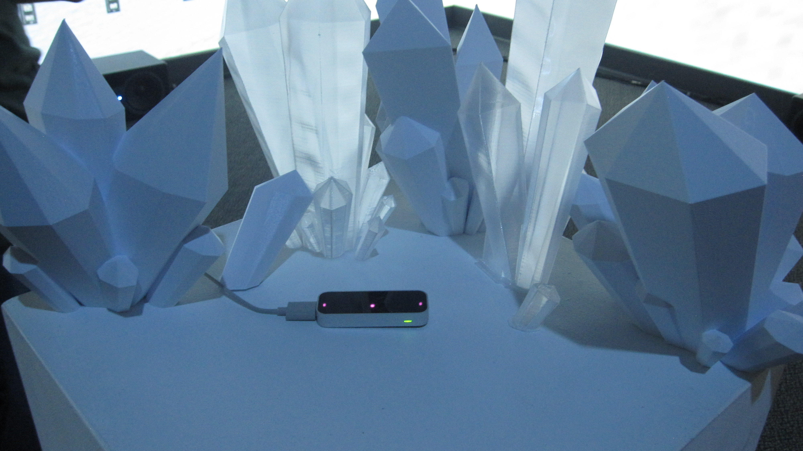
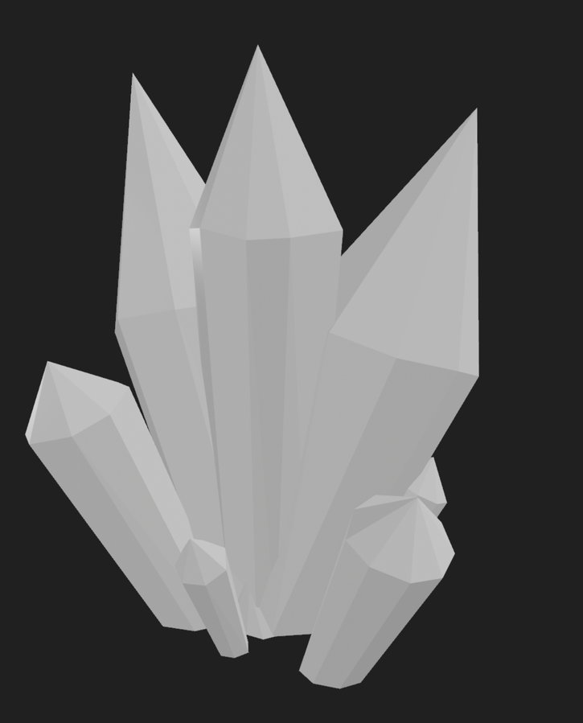
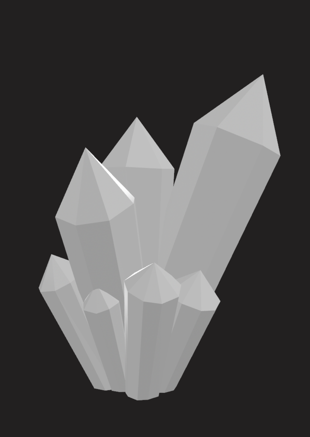
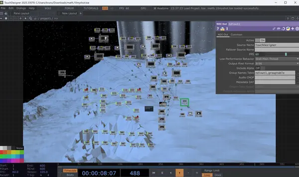
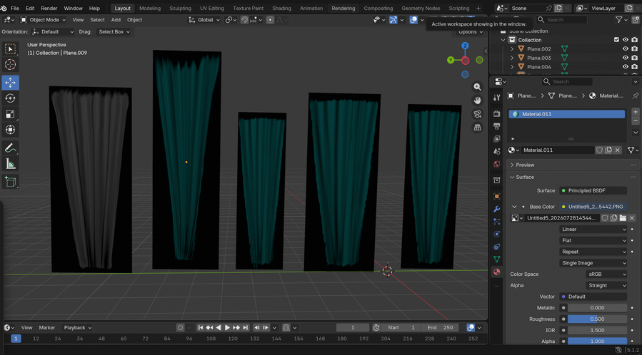
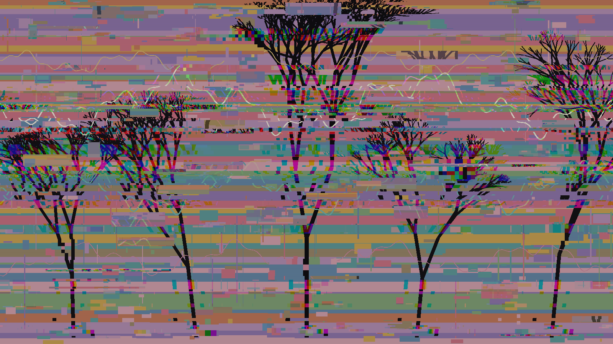
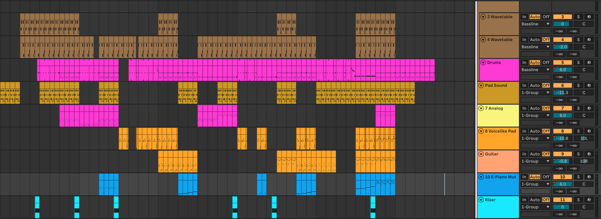

Works
Enceladus Jumbled Steady DriveEnceladus





A projection of the surface of Saturn's moon, Enceladus. The projection surrounds the audience member along two walls, allowing for an immersive experience. Audience members experience a simulation of walking on this moon along a preset path. This is the 3D printed decor that was added to the projection, and they sit on a pedestal surrounding the Leap Motion sensor that takes in hand movement in order to move through the projection.
My contribution consisted of designing the geysers that were added to the final Blender file that was projected, and 3D printing the crystals that surround the Leap Motion sensor.
Jumbled

View the code (Python / Klotho)
# -*- coding: utf-8 -*-
"""ajoonee_final_piece (1).ipynb
Automatically generated by Colab.
Original file is located at
https://colab.research.google.com/drive/1Ur3QG-7KfsqjbpG-rJusYH2gfcCUNVuT
# Ajoonee's Piece v2
Your notebook, rebuilt so the piece you described in your comments actually plays start to finish. Every plan you left as a comment is wired in — the full list of what changed (and where each of your notes ended up) is in the last cell.
The form, straight from your comments:
1. **Intro** — arps + harmony, reverse cymbal entering at the end
2. **Chorale** — your four Eb chords ("starts after above cell is done")
3. **Beat** — the 25/16 kit, eased in, fragments scattered at random spots, last bar crescendos with an Eb swell "to lead into the gesture"
4. **Gestures** — the "rly good" sparse groove under both sequences; sparkles + chords under the 2nd only, "so the 1st sequence stands out"
5. **Risers** — the wash/cresc/tapeRise stack
6. **Final part** — the 147 BPM trees, chords layering in one by one, the lydian melody entering after a few measures and going until the end
7. **Outro** — "like the beginning", ending on the chords over a perc layer that fades out
The tabla + L-system experiment stays at the bottom as its own thing.
"""
# Commented out IPython magic to ensure Python compatibility.
# %pip install -q --progress-bar off --disable-pip-version-check klotho-cac
import random
from itertools import cycle
from random import choice
from klotho import plot, play, set_audio_engine
from klotho.thetos import CompositionalUnit as UC, Ensemble, Score
from klotho.thetos.instruments.synthdef import SynthDefKit
from klotho.chronos import Meas, RhythmTree, beat_duration, TemporalUnitSequence as UTS, TemporalBlock as BT
from klotho.tonos import Hexany, Chord, Scale, Contour, PitchCollection as PC
from klotho.tonos.systems.combination_product_sets import match_pattern
from klotho.topos import Pattern, autoref
from klotho.topos.formal_grammars import Alphabet, RewriteSystem, Interpreter, show_generations
from klotho.dynatos import Envelope as Env
set_audio_engine("supersonic")
"""## The Instruments
One ensemble for the whole piece: the built-in `edm` kit, with your pads, arp voice, melody synths, and the lofi risers grafted in. (Your notebook had two competing `ens` assignments — the second silently overwrote the first, which is why the lofi voices stopped resolving.)
"""
ens = Ensemble.edm(name='piece', extras={
'pads': {'softPad': 'fd_sinepad', 'warmSaw': 'fd_longsaw'},
'arps': {'chipBlip': 'fd_blip'},
'leads': {'zap': 'fd_zap', 'quin': 'fd_quin'},
'accents': {'wash': 'lofi/wash', 'cresc': 'lofi/cresc', 'tapeRise': 'lofi/tapeRise'},
})
tabla = SynthDefKit.tabla()
for family in ens.families:
print(f"{family}: {list(ens.family[family])}")
"""## Config
All the materials in one place — pitch stuff first, then the per-section tempi.
"""
ROOT = 'Eb'
LATTICE = Hexany().root(ROOT)
CHORD_PROG = LATTICE.chord(match_pattern(LATTICE, (2, 5, 3, 4), sort_by='position', include_target=True))
N_BARS_PER_CHORD = 1
TEMPUS = Meas('4/4')
BEAT = '1/3' # your triplet-feel beat unit for the harmony layers
BPM = 110
# The four chords from "starts after above cell is done" (Eb on top, Gb/Bb below)
CHORALE = [PC.from_pitch(p) for p in (['Eb5', 'Gb', 'Bb'],
['C#5', 'Gb', 'Bb'],
['C5', 'Gb', 'Bb'],
['Bb4', 'Gb', 'Bb'])]
CHORALE_AMPS = [1, 1.5, 1.75, 2] # your fade: each chord a little softer
# Beat + groove sections
BEAT_SIG = '25/16'
BEAT_BPM = 110
GROOVE_BPM = 132
# The two gesture sequences (Eb major; 2nd an octave+ lower)
GESTURE_SCALE_HI = Scale().root('Eb')
GESTURE_SCALE_LO = Scale().root('Eb3')
G1 = Contour([0, 2, 4, 3, 1, 2])
G2A = Contour([4, 6, 2, 7, 1, 7, 5, -1])
G2B = Contour([3, 5, 2, 4, 1, 7, 5, 4])
SEQ_1 = Contour.outer(G2A, G1)
SEQ_2 = Contour.outer(G1, G2B)
# Final part: your lydian melody, backwards
FINAL_BPM = 147
FINAL_SCALE = Scale.lydian().root(ROOT)
DIRECTRIX = Contour([5, 7, 1, 3, 5, 2, 0, -1, 0])
GENERATRIX = Contour(Pattern([[0, [4, -1, 7]], [1, -2], [5, [2, [-3]], 6]], [2, [3, -1]]))
FINAL_MELODY = Contour.outer(DIRECTRIX, GENERATRIX).retrograde() # 162 notes
"""## Harmony & Melody Layers
Your `make_arps` / `make_harmony` / `make_transition`, plus two new ones: `make_chords` for the chorale, and `make_melody` — the answer to your *"why doesn't this work?"* — the trick is wrapping the pitches in a `Pattern`, which deals one pitch per leaf.
"""
def make_arps(chords, span=1, tempus=TEMPUS, prolatio=(7, (6, 2, 4, 5)),
beat=BEAT, bpm=BPM, inst='chipBlip', amp=0.8, **kwargs):
seq = UTS()
arp_pats = cycle([
Pattern([4, [6, 2]]),
Pattern([2, [5, 3], 1, [-2, 7]]),
])
shift_pat = Pattern([0, [1, [-1, -2]]])
for i, chord in enumerate(chords):
arp_pat = next(arp_pats) # which degree-pattern to use this bar
sign = -1 if i % 2 == 0 else 1 # invert the contour every other bar
shift = next(shift_pat) # nudge the whole bar up/down a degree
uc = UC(span=span, tempus=tempus, prolatio=(prolatio,) * span * 2, beat=beat, bpm=bpm,
inst=ens.voice(inst))
uc.leaves.set(freq=lambda: chord[sign * next(arp_pat) + shift].freq, amp=amp, **kwargs)
uc.root.apply_envelope(Env([0.15 * amp, 2.0 * amp, 0.15 * amp, 1.5 * amp]), 'amp')
seq.append(uc)
return seq
def make_harmony(chords, span=1, tempus=TEMPUS, beat=BEAT, bpm=BPM, inst='warmSaw', amp=1.5, **kwargs):
seq = UTS()
amp_pat = Pattern([amp, amp * 1.9])
for chord in chords:
uc = UC(span=span, tempus=tempus, prolatio='d', beat=beat, bpm=bpm, inst=ens.voice(inst))
uc.root.set(freq=chord, amp=next(amp_pat), **kwargs)
seq.append(uc)
return seq
def make_chords(chords=None, amps=None, span=1, tempus='2/4', beat=BEAT, bpm=BPM, inst='softPad', **kwargs):
chords = CHORALE if chords is None else chords
amps = CHORALE_AMPS if amps is None else amps
seq = UTS()
for chord, amp in zip(chords, amps):
uc = UC(span=span, tempus=tempus, prolatio='d', beat=beat, bpm=bpm, inst=ens.voice(inst))
uc.root.set(freq=chord.as_voicing(), amp=amp, **kwargs)
seq.append(uc)
return seq
def make_swell(chord, span=1, tempus=TEMPUS, beat=BEAT, bpm=BPM, inst='cresc', amp=0.5, **kwargs):
uc = UC(span=span, tempus=tempus, prolatio='d', beat=beat, bpm=bpm, inst=ens.voice(inst))
uc.root.set(freq=chord.as_voicing(), amp=amp, **kwargs)
return uc
def make_transition(cps, equave_shift=0, span=1, tempus=TEMPUS, beat=BEAT, bpm=BPM, inst='wash', amp=0.5, **kwargs):
uc = UC(span=span, tempus=tempus, prolatio='d', beat=beat, bpm=bpm, inst=ens.voice(inst))
uc.leaves.set(freq=Chord(cps.ratios).root(cps.reference_pitch).equave_shift(equave_shift),
amp=amp, pan=lambda: random.uniform(-1, 1), **kwargs)
return uc
def make_melody(seq, scale, bpm, inst='zap', amp=0.8, **kwargs):
n = len(seq)
uc = UC(tempus=Meas(n, 16), prolatio=(1,) * n, beat='1/4', bpm=bpm, inst=ens.voice(inst))
uc.leaves.set(freq=Pattern(scale[seq].pitches), amp=amp, **kwargs)
return uc
"""## Fragments
Your uc3/uc4/uc7/uc8, as reusable functions. `enters_after` answers your question about placement: silence for a given span, then the fragment — hand it a random offset and the fragment lands somewhere different every build. (The `duration=` plumbing is gone; sweep synths read their event duration automatically now.)
"""
def make_rev_sweep(bpm=BPM, beat='1/4', amp=1.0):
uc = UC(tempus='2/4', prolatio=(1, 2, 3), beat=beat, bpm=bpm, inst=ens['revCymbal'])
uc.leaves.set(amp=amp)
return uc
def make_bass_drop(bpm=BPM, beat='1/4'):
uc = UC(tempus=2, prolatio=(1, 3), beat=beat, bpm=bpm, inst=ens['subBass'])
uc.leaves[0].set_instrument(ens['chipSweep3'])
return uc
def make_sweep_tree(bpm=BPM, beat='1/4'):
uc = UC(tempus='1/2', prolatio=((1, (1,) * 3), (2, (1,)), (3, (1,) * 7)), beat=beat, bpm=bpm)
for leaf in uc.leaves:
leaf.set_instrument(ens.voice('chipSweep' + str(choice([1, 2, 3]))))
return uc
def make_perc_burst(bpm=BPM, beat='1/4'):
uc = UC(tempus=1, prolatio=autoref((3, 4, 5)), beat=beat, bpm=bpm)
for branch in uc.at_depth(1):
branch.set_instrument(ens.voice(choice(['blip', 'rubber1', 'rubber2'])))
return uc
def enters_after(spacer, unit, bpm, beat='1/4'):
"""Silence for `spacer`, then the unit -- for dropping fragments mid-track."""
return UTS([UC(tempus=spacer, prolatio='r', beat=beat, bpm=bpm), unit])
"""## Beat Machines
The 25/16 kit from your Assignment-1 beat, the "rly good" sparse groove, the sparkle layer (with its bug fixed — the ping at 14 was being instantly overwritten by rubber1, a leftover from a commented-out `elif`), and the 147 BPM trees for the final part. Each is a function returning a fresh bar, so sections can repeat and reshape them.
"""
def make_beat_kick(bpm=BEAT_BPM):
uc = UC(tempus=BEAT_SIG, prolatio=(16, 9), beat='1/4', bpm=bpm, inst=ens['kickSoft'])
uc.root.children[0].subdivide((4,) * 4)
uc.root.children[1].subdivide((3,) * 3)
for branch in uc.at_depth(1):
branch.children[1:].set_instrument(ens['snare'])
branch.children[1:].apply_envelope(Env([0.2, 1], curve=2), 'amp', scope='span')
return uc
def make_beat_hats(bpm=BEAT_BPM):
uc = UC(tempus=BEAT_SIG, prolatio=((16, (4,) * 4), (9, (3,) * 3)), beat='1/4', bpm=bpm, inst=ens['hatLong'])
for leaf in uc.leaves:
leaf.subdivide(leaf.proportion)
for branch in uc.at_depth(2):
branch.children[1].make_rest()
branch.children[-1].set_instrument(ens['woodblock'])
branch.apply_envelope(Env([0.1, 1], curve=-2), 'amp')
branch.children.set(pan=lambda c: [-1, 1][c.index % 2])
return uc
def make_beat_snare(bpm=BEAT_BPM):
uc = UC(tempus=BEAT_SIG, prolatio=((16, (2,) * 8), (9, (3,) * 3)), beat='1/4', bpm=bpm, inst=ens['ghostSnare'])
for branch in uc.at_depth(1):
branch.children[0, 2].make_rest()
uc.select(1).children[3:].set_instrument(ens['snare2'])
uc.select(1).children[3:].apply_envelope(Env([0.65, 1]), 'amp', scope='span')
uc.select(10).set_instrument(ens['clap'])
return uc
def make_sparse_groove(bpm=GROOVE_BPM, amp=1.0):
uc = UC(tempus=BEAT_SIG, prolatio=(1,) * 8, beat='1/4', bpm=bpm)
for leaf in uc.leaves:
leaf.subdivide((1, 1, 1))
hits = {0: (ens['kick'], 1.0), 9: (ens['hatShort'], 0.4), 12: (ens['clap'], 0.9), 18: (ens['hatShort'], 0.4)}
for i, leaf in enumerate(uc.leaves):
if i in hits:
inst, a = hits[i]
leaf.set(inst=inst, amp=a * amp)
else:
leaf.make_rest()
return uc
def make_game_layer(bpm=GROOVE_BPM, seed=None):
rng = random.Random(seed)
uc = UC(tempus='4/4', prolatio=(1,) * 16, beat='1/4', bpm=bpm)
sparkle_spots = rng.sample([1, 2, 3, 6, 7, 9, 10, 13], 3)
for i, leaf in enumerate(uc.leaves):
if i in sparkle_spots:
leaf.set(inst=ens['rubber2'], amp=lambda: rng.uniform(0.2, 0.4))
elif i in (5, 11):
leaf.set(inst=ens['rubber1'], amp=0.2)
elif i == 14:
leaf.set(inst=ens['ping'], amp=0.5)
elif i == 15:
leaf.set(inst=ens['blip'], amp=0.15)
else:
leaf.make_rest()
return uc
def make_final_hats(bpm=FINAL_BPM):
uc = UC(tempus=Meas(48, 16), prolatio=((16, (4, 4, 4, 4)),) * 4, beat='1/4', bpm=bpm, inst=ens['kickSoft'])
for leaf in uc.leaves:
leaf.subdivide(leaf.proportion)
for branch in uc.at_depth(2):
branch.children[1].make_rest()
branch.children[2].set_instrument(ens['blip'])
branch.children[3].set_instrument(ens['hatShort'])
branch.apply_envelope(Env([0.1, 1], curve=-2), 'amp')
branch.children.set(pan=lambda c: [-1, 1][c.index % 2])
return uc
def make_final_kick(bpm=FINAL_BPM):
uc = UC(tempus=Meas(64, 16),
prolatio=((8, (4, 4)), (13, (7, 6)), (9, (4, 5)), (15, (5, 5, 5)), (7, (2, 5)), (12, (6, 6))),
beat='1/4', bpm=bpm, inst=ens['kickSoft'])
for branch in uc.at_depth(1):
branch.children[1:].set_instrument(ens['clap'])
branch.children[1:].apply_envelope(Env([0.2, 1], curve=2), 'amp', scope='span')
return uc
"""## The Sections
One builder per section — run any cell to hear that section alone.
**Intro** — arps + harmony; the reverse cymbal is right-aligned, so it lands at the end (no more counting out a `14/4` spacer).
"""
def intro_section(sweep=True):
layers = [
make_arps(CHORD_PROG, span=N_BARS_PER_CHORD, releaseTime=3, amp=1.5),
make_harmony(CHORD_PROG.equave_shift(-1).voicing([-1, 2, 1, 3]), span=N_BARS_PER_CHORD,
inst='softPad', amp=2, attackTime=0.5, attackCurve=2, decayTime=0.5,
sustainLevel=1, releaseTime=1),
]
if sweep:
layers.append(make_rev_sweep(bpm=BPM, beat=BEAT, amp=0.15))
return BT(layers, axis=1) # right-aligned: the sweep lands at the end
play(intro_section())
"""**Chorale** — your four chords, each a little softer than the last."""
def chorale_section():
return make_chords(attackTime=0.05, releaseTime=1, span=1)
play(chorale_section())
def chorale_section2():
return make_chords(attackTime=0.05, releaseTime=1, span=1.25)
play(chorale_section2())
"""**Beat** — your comments, wired in: the first bar crescendos in "so it doesn't start as harsh", the last bar crescendos out, the bass drop waits a bar ("put uc4 the second time instead of at the very beginning"), the sweep-tree and perc-burst fragments land at random spots (re-rolled every build — pass `seed=` to freeze one you like), the reverse cymbal caps the end, and a crescendoing Eb swell leads into the gestures."""
def make_full_groove(beat='1/4', bpm=110, time_sig='25/16'):
kickSoft = UC(tempus=time_sig,
prolatio=(16, 9),
beat=beat,
bpm=bpm,
inst=ens['kickSoft'])
kickSoft.root.children[0].subdivide((4,)*4)
kickSoft.root.children[1].subdivide((3,)*3)
for branch in kickSoft.at_depth(1):
branch.children[1:].set_instrument(ens['snare'])
for branch in kickSoft.at_depth(1):
branch.children[1:].apply_envelope(Env([0.2, 1], curve=2), 'amp', scope='span')
hat_divs = ((16, (4,)*4), (9, (3,)*3))
hats = UC(tempus=time_sig, prolatio=hat_divs, beat=beat, bpm=bpm, inst=ens['hatLong'])
for leaf in hats.leaves:
leaf.subdivide(leaf.proportion)
for branch in hats.at_depth(2):
branch.children[1].make_rest()
branch.children[-1].set_instrument(ens['woodblock'])
branch.apply_envelope(Env([0.1, 1], curve=-2), 'amp')
branch.children.set_pfields(pan=lambda c: [-1, 1][c.index % 2])
snare_divs = ((16, (2,)*8), (9, (3,)*3))
snare = UC(tempus=time_sig, prolatio=snare_divs, beat=beat, bpm=bpm, inst=ens['ghostSnare'])
for branch in snare.at_depth(1):
branch.children[0,2].make_rest()
snare.select(1).children[3:].set_instrument(ens['snare2'])
snare.select(1).children[3:].apply_envelope(Env([0.65, 1]), 'amp', scope='span')
snare.select(10).set_instrument(ens['clap'])
rests = UC(tempus=kickSoft.tempus, span=kickSoft.span, beat=kickSoft.beat, bpm=kickSoft.bpm, prolatio='r').repeat(2)
chord_uc = UC(tempus=kickSoft.tempus, span=kickSoft.span, beat=kickSoft.beat, bpm=kickSoft.bpm, prolatio='d', inst='kl_saw')
chord_uc.root.set_pfields(freq = Chord([4,5,6]), attackTime = lambda c: c.real_duration * 0.9, attackCurve = 3)
return BT([
kickSoft.repeat(3),
hats.repeat(2),
snare.repeat(2),
make_bass_drop(),
UTS([rests, chord_uc])
])
plot(make_full_groove())
play(make_full_groove())
# @title
# lines of code with only one # made it into final piece (seen in cell above)
# # def beat_section(n_bars=3, bpm=BEAT_BPM, seed=None):
# # rng = random.Random(seed)
# # bar = Meas(BEAT_SIG)
# # total = n_bars * 25 # sixteenths in the section
# # kick_bars = [make_beat_kick(bpm) for _ in range(n_bars)]
# # kick_bars[0].root.apply_envelope(Env([0.15, 1], curve=2), 'amp')
# # kick_bars[-1].root.apply_envelope(Env([0.3, 1], curve=2), 'amp')
# # def spot(length_16ths):
# # return Meas(rng.randrange(8, total - length_16ths), 16)
# # return BT([
# # UTS(kick_bars),
# # enters_after(bar, UTS([make_beat_hats(bpm) for _ in range(n_bars - 1)]), bpm),
# # enters_after(bar, UTS([make_beat_snare(bpm) for _ in range(n_bars - 1)]), bpm),
# # enters_after(bar, make_bass_drop(bpm), bpm),
# # enters_after(spot(8), make_sweep_tree(bpm), bpm),
# # enters_after(spot(16), make_perc_burst(bpm), bpm),
# # enters_after(Meas(total - 8, 16), make_rev_sweep(bpm), bpm),
# # enters_after(Meas((n_bars - 1) * 25, 16),
# # make_swell(CHORALE[0], tempus=BEAT_SIG, beat='1/4', bpm=bpm, amp=0.6), bpm),
# # ], axis=-1)
# # play(beat_section())
# def make_full_groove(beat='1/4', bpm=110, time_sig='25/16'):
# kickSoft = UC(tempus=time_sig,
# prolatio=(16, 9),
# beat=beat,
# bpm=bpm,
# inst=ens['kickSoft'])
# kickSoft.root.children[0].subdivide((4,)*4)
# kickSoft.root.children[1].subdivide((3,)*3)
# for branch in kickSoft.at_depth(1):
# branch.children[1:].set_instrument(ens['snare'])
# for branch in kickSoft.at_depth(1):
# branch.children[1:].apply_envelope(Env([0.2, 1], curve=2), 'amp', scope='span')
# hat_divs = ((16, (4,)*4), (9, (3,)*3))
# hats = UC(tempus=time_sig, prolatio=hat_divs, beat=beat, bpm=bpm, inst=ens['hatLong'])
# for leaf in hats.leaves:
# leaf.subdivide(leaf.proportion)
# for branch in hats.at_depth(2):
# branch.children[1].make_rest()
# branch.children[-1].set_instrument(ens['woodblock'])
# branch.apply_envelope(Env([0.1, 1], curve=-2), 'amp')
# branch.children.set_pfields(pan=lambda c: [-1, 1][c.index % 2])
# snare_divs = ((16, (2,)*8), (9, (3,)*3))
# snare = UC(tempus=time_sig, prolatio=snare_divs, beat=beat, bpm=bpm, inst=ens['ghostSnare'])
# for branch in snare.at_depth(1):
# branch.children[0,2].make_rest()
# snare.select(1).children[3:].set_instrument(ens['snare2'])
# snare.select(1).children[3:].apply_envelope(Env([0.65, 1]), 'amp', scope='span')
# snare.select(10).set_instrument(ens['clap'])
# rests = UC(tempus=kickSoft.tempus, span=kickSoft.span, beat=kickSoft.beat, bpm=kickSoft.bpm, prolatio='r').repeat(2)
# chord_uc = UC(tempus=kickSoft.tempus, span=kickSoft.span, beat=kickSoft.beat, bpm=kickSoft.bpm, prolatio='d', inst='kl_saw')
# chord_uc.root.set_pfields(freq = Chord([4,5,6]), attackTime = lambda c: c.real_duration * 0.9, attackCurve = 3)
# return BT([
# kickSoft.repeat(3),
# hats.repeat(2),
# snare.repeat(2),
# make_bass_drop(),
# UTS([rests, chord_uc])
# ])
# plot(make_full_groove())
# play(make_full_groove())
# # ## ASSIGNMENT 1 BEAT - RHYTHM TREE
# # # time_sig came from plot tree
# # beat = '1/4'
# # bpm = 110
# # time_sig = '25/16'
# # kickSoft = UC(tempus=time_sig,
# # prolatio=(16, 9), # prolatio means how are we splitting up the notes
# # beat=beat,
# # bpm=bpm,
# # inst=ens['kickSoft'])
# # # this makes one group of 16 1/8 notes and a second group of 9 1/8 notes
# # kickSoft.root.children[0].subdivide((4,)*4) # divides the 16 into to 4 groups of 4
# # kickSoft.root.children[1].subdivide((3,)*3) # divides the 9 into 3 groups of 3
# # for branch in kickSoft.at_depth(1):
# # # depth 1 refers to the group below the root group
# # # so for both the 16 and 9 group
# # branch.children[1:].set_instrument(ens['snare'])
# # # [1:] refers to all the elements in the list, starting from the second
# # # adding dynamics
# # for branch in kickSoft.at_depth(1):
# # branch.children[1:].apply_envelope(Env([0.2, 1], curve=2), 'amp', scope='span')
# # # adding a hi-hat layer
# # # this is just expressing the tree as a nested list
# # hat_divs = ((16, (4,)*4), (9, (3,)*3))
# # hat_divs
# # hats = UC(tempus=time_sig, prolatio=hat_divs, beat=beat, bpm=bpm, inst=ens['hatLong'])
# # # divides the subgroup into 1's (creates a depth 2)
# # for leaf in hats.leaves:
# # leaf.subdivide(leaf.proportion)
# # for branch in hats.at_depth(2):
# # # makes the second note of each group a rest
# # branch.children[1].make_rest() # `[1] is the second element
# # # And we'll make the last note of each group an open hi-hat sound
# # branch.children[-1].set_instrument(ens['woodblock']) # `[-1]` gives us the last element
# # # While we're here, let's add some dynamics and panning as well.
# # branch.apply_envelope(Env([0.1, 1], curve=-2), 'amp')
# # branch.children.set_pfields(pan = lambda c: [-1, 1][c.index % 2]) # alternate hard-left-and-right
# # # panning is how the sound travels from ear to ear when wearing headphones/on the speaker
# # # creating a snare/clap layer
# # snare_divs = ((16, (2,)*8), (9, (3,)*3))
# # snare = UC(tempus=time_sig, prolatio=snare_divs, beat=beat, bpm=bpm, inst=ens['ghostSnare'])
# # # changing the first + third note as a rest
# # for branch in snare.at_depth(1):
# # branch.children[0,2].make_rest()
# # # let's see/hear it
# # snare.select(1).children[3:].set_instrument(ens['snare2'])
# # # (1) means from node 2 (the subgroup); [3:] means the 4th index + onwards
# # snare.select(1).children[3:].apply_envelope(Env([0.65, 1]), 'amp', scope='span')
# # # dynamics!
# # snare.select(10).set_instrument(ens['clap']) # make these clap sounds
# # play(BT([
# # kickSoft.repeat(3),
# # hats.repeat(2),
# # snare.repeat(2),
# # make_bass_drop()
# # ]))
# # # plot(BT([kickSoft, hats, snare])).play(loop=4)
# # plot(BT([
# # kickSoft.repeat(4),
# # hats.repeat(4),
# # snare.repeat(2),
# # make_bass_drop()
# # ]))
# # play(BT([
# # kickSoft.repeat(3),
# # hats.repeat(2),
# # snare.repeat(2),
# # make_bass_drop()
# # ]))
"""**Gestures** — the sparse groove runs under both sequences; the sparkle layer and the chords join only under the 2nd, "so the 1st sequence stands out". Melody sixteenths at 100 BPM = the `dur=0.15` from your auditions."""
scale = Scale().root('Eb')
# gesture_1 = Contour([1, 3, 4, 1, 3, 6])
gesture_1 = Contour([0, 2, 4, 3, 1, 2])
# gesture_2 = Contour([5,4,3,2,0,6])
gesture_2 = Contour([4, 6 ,2 ,7 ,1, 7, 5, -1])
seq_1 = Contour.outer(gesture_2, gesture_1)
print("\nCombined (2 + 1):")
plot(seq_1, figsize=(8, 3))
play(scale[seq_1], dur=0.15, inst='fd_zap', attackTime=0.15,releaseTime=1)
# @title
# lines of code with only one # made it into final piece (seen in cell above)
# # def gesture_section(n_bars=6, bpm=GROOVE_BPM, melody_bpm=100):
# # groove = UTS([make_sparse_groove(bpm) for _ in range(n_bars)])
# # seq1 = make_melody(SEQ_1, GESTURE_SCALE_HI, bpm=melody_bpm, attackTime=0.15, releaseTime=1)
# # second_half = BT([
# # make_melody(SEQ_2, GESTURE_SCALE_LO, bpm=melody_bpm, attackTime=0.15, releaseTime=0.5),
# # UTS([make_game_layer(bpm) for _ in range(4)]),
# # make_chords(amps=[a * 0.4 for a in CHORALE_AMPS], tempus='4/4', releaseTime=1),
# # ], axis=-1)
# # return BT([groove, UTS([seq1, second_half])], axis=-1)
# # play(gesture_section())
# scale = Scale().root('Eb')
# # gesture_1 = Contour([1, 3, 4, 1, 3, 6])
# gesture_1 = Contour([0, 2, 4, 3, 1, 2])
# # gesture_2 = Contour([5,4,3,2,0,6])
# gesture_2 = Contour([4, 6 ,2 ,7 ,1, 7, 5, -1])
# # print("Gesture 1:")
# # plot(gesture_1, figsize=(8, 3))
# # play(scale[gesture_1], dur=0.3, inst='fd_zap', attackTime=0.15, releaseTime=1)
# # print("\nGesture 2:")
# # plot(gesture_2, figsize=(8, 3))
# # play(scale[gesture_2], dur=0.3, inst='fd_zap', attackTime=0.15, releaseTime=1)
# seq_1 = Contour.outer(gesture_2, gesture_1)
# print("\nCombined (2 + 1):")
# plot(seq_1, figsize=(8, 3))
# play(scale[seq_1], dur=0.15, inst='fd_zap', attackTime=0.15,releaseTime=1)
# # scale = Scale().root('Eb3')
# # gesture_1 = Contour([0, 2, 4, 3, 1, 2])
# # # gesture_2 = Contour([5,4,3,2,0,6])
# # gesture_2 = Contour([3, 5, 2, 4, 1, 7, 5, 4])
# # seq_2 = Contour.outer(gesture_1, gesture_2)
# # # i want 2nd sequence to have a layer of Eb chords to tie it back to beginning
# # # maybe just have chords play all throughout to make it sound fuller
# # # or just play the chord in the 2nd sequence so the 1st sequence stands out
# # print("\nCombined (1 + 2):")
# # plot(seq_2, figsize=(8, 3))
# # play(scale[seq_2], dur=0.15, inst='fd_zap', attackTime=0.15, releaseTime=0.5)
# # # time_sig = '4/4' # CLAUDE (simple very boring sounding)
# # # sparse_groove = UC(tempus=time_sig, prolatio=(1,)*8, beat=beat, bpm=bpm)
# # # sparse_groove.leaves[0].set_instrument(ens['kick'])
# # # sparse_groove.leaves[0].set_pfields(amp=1)
# # # sparse_groove.leaves[3].set_instrument(ens['hatShort'])
# # # sparse_groove.leaves[3].set_pfields(amp=0.4)
# # # sparse_groove.leaves[4].set_instrument(ens['clap'])
# # # sparse_groove.leaves[4].set_pfields(amp=0.9)
# # # sparse_groove.leaves[6].set_instrument(ens['hatShort'])
# # # sparse_groove.leaves[6].set_pfields(amp=0.4)
# # # for i, leaf in enumerate(sparse_groove.leaves):
# # # if i not in (0, 3, 4, 6):
# # # leaf.make_rest()
# # # play(sparse_groove.repeat(4))
# # sparse_groove = UC(tempus=time_sig, prolatio=(1,)*8, beat=BEAT, bpm=132)
# # for branch in sparse_groove.at_depth(1) if sparse_groove.depth > 0 else sparse_groove.leaves:
# # branch.subdivide((1, 1, 1))
# # sparse_groove.leaves[0].set_instrument(ens['kick'])
# # sparse_groove.leaves[0].set_pfields(amp=1)
# # sparse_groove.leaves[9].set_instrument(ens['hatShort'])
# # sparse_groove.leaves[9].set_pfields(amp=0.4)
# # sparse_groove.leaves[12].set_instrument(ens['clap'])
# # sparse_groove.leaves[12].set_pfields(amp=0.9)
# # sparse_groove.leaves[18].set_instrument(ens['hatShort'])
# # sparse_groove.leaves[18].set_pfields(amp=0.4)
# # for i, leaf in enumerate(sparse_groove.leaves):
# # if i not in (0, 9, 12, 18):
# # leaf.make_rest()
# # time_sig = '4/4'
# # import random # CLAUDE (more extra/sparkle things)
# # game_layer = UC(tempus=time_sig, prolatio=(1,)*16, beat=BEAT, bpm=132)
# # rubber2_spots = random.sample([1, 2, 3, 6, 7, 9, 10, 13], 3) # 3 random spots out of the open positions, re-picked each run
# # for i, leaf in enumerate(game_layer.leaves):
# # if i in rubber2_spots:
# # leaf.set_instrument(ens['rubber2'])
# # leaf.set_pfields(amp=lambda: random.uniform(0.2, 0.4))
# # # elif i == 14:
# # leaf.set_instrument(ens['ping'])
# # leaf.set_pfields(amp=0.5)
# # # elif i in (5, 11):
# # leaf.set_instrument(ens['rubber1'])
# # leaf.set_pfields(amp=0.2)
# # elif i == 15:
# # leaf.set_instrument(ens['blip'])
# # leaf.set_pfields(amp=0.15)
# # else:
# # leaf.make_rest()
# # play(game_layer)
# # play(BT([
# # game_layer.repeat(6),
# # sparse_groove.repeat(12), # i want this to play during both gestures
# # # i want this to play only during the 2nd gesture
# # ]))
# # play(BT([
# # sparse_groove.repeat(12), # i want this to play during both gestures
# # game_layer.repeat(6), # i want this to play only during the 2nd gesture
# # ]))
# @title
TABLA_BEAT, TABLA_BPM = '1/4', 74
rt = RhythmTree(span=1, meas='48/16', subdivisions=
((6, (1, 2, 3)), (6, (3, 1, 1, 1)), (6, (2, 1, 3)), (6, (3, 1, 2)), (6, (1, 1, 2, 2)), (6, (3, 1, 2)), (6, (2, 3, 1)), (6, (3, 1, 1, 1))))
pulse = UC.from_rt(rt, beat=TABLA_BEAT, bpm=TABLA_BPM)
pulse.set_instrument(pulse.root, tabla)
# 10 random strokes out of tabla's 14, re-picked every time you run this cell
strokes = random.sample(range(14), 10)
pulse.leaves.set_pfields(voice=Pattern(strokes), amp=1)
plot(rt, layout='tree')
freqs = scale[seq_1].freqs
seq_uc = UC(tempus=len(seq_1), prolatio=(1,)*len(seq_1), bpm=300, inst=ens['zap'])
for i, leaf in enumerate(seq_uc.leaves):
leaf.set_pfields(freq=freqs[i], attackTime=0.15, releaseTime=1)
play(BT([
pulse,
seq_uc,
]))
"""**Final part** — the 147 BPM trees; the four chords layer in one by one (right-aligned, each spanning longer than the last); your lydian melody enters after a few measures of the perc and goes until the end."""
# @title
# def riser_stack():
# return BT([
# make_transition(LATTICE, inst='tapeRise', equave_shift=1, span=1, strum=0.25),
# make_transition(LATTICE, inst='wash', equave_shift=-1, span=2, strum=0.6),
# make_transition(LATTICE, inst='cresc', equave_shift=0, span=3),
# ], axis=1)
# def final_section(n_loops=5, bpm=FINAL_BPM, melody_bpm=100):
# drums = BT([
# UTS([make_final_kick(bpm) for _ in range(n_loops)]),
# UTS([make_final_hats(bpm) for _ in range(n_loops + 1)]),
# ], axis=1)
# pads = BT([make_swell(CHORALE[k], inst='softPad', span=k + 1, amp=0.5, attackTime=1, releaseTime=2)
# for k in range(4)], axis=1) # chords layer in one by one
# melody = make_melody(FINAL_MELODY, FINAL_SCALE, bpm=melody_bpm, releaseTime=1)
# return BT([drums, pads, melody], axis=1)
# play(riser_stack())
# play(final_section())
"""**Outro** — "kind of be like the beginning": the intro block returns (without its sweep), then the chords close over the sparse groove fading out."""
def outro_section():
fade = UTS([make_sparse_groove(bpm=GROOVE_BPM, amp=a) for a in (0.7, 0.45, 0.25, 0.1)])
closing = make_chords(span=0.85, tempus='4/4', attackTime=0.5, releaseTime=3)
return UTS([intro_section(sweep=False), BT([closing, fade], axis=-1)])
fade = UTS([make_sparse_groove(bpm=GROOVE_BPM, amp=a) for a in (0.7, 0.45, 0.25, 0.1)])
closing = make_chords(span=0.85, tempus='4/4', attackTime=0.5, releaseTime=3)
# play(outro_section())
# play(fade)
# play(closing)
play(BT([fade, closing]))
print(pulse)
play(BT([pulse, seq_uc]))
play(pulse)
play(pulse)
plot(pulse)
"""## The Piece"""
play(pulse)
piece = UTS([
intro_section(),
chorale_section(),
(make_full_groove()),
(BT([
pulse,
seq_uc,
])),
chorale_section2(),
outro_section()
])
plot(piece, figsize=(25, 2)).play()
plot((pulse), figsize=(25,2)).play()
"""---
## What changed, and why
**Where your comments went:**
- *"how do i get this to work + how do i randomly place these within the track"* → `enters_after` (a silent spacer, then the fragment) plus the `spot()` roll inside `beat_section`. Pass `seed=` to freeze a placement you like.
- *"figure out how to add uc7 uc8 uc3 to the end of this phrase"* → all three are in `beat_section`: sweep-tree and perc-burst at random spots, the reverse cymbal capping the end.
- *"apply a crescendo in the beginning of perc track so it doesn't start as harsh"* / *"i want the last one to crescendo"* → amp envelopes on the first and last kick bars in `beat_section`.
- *"a crescendoing Eb chord to lead into the gesture"* → `make_swell(CHORALE[0], inst='cresc')` over the last bar of `beat_section`.
- *"maybe put uc4 the second time instead of at the very beginning"* → the bass drop now waits one bar.
- *"why doesn't this work?"* (the melody UC) → `make_melody`: wrap the pitches in `Pattern(scale[seq].pitches)` and it deals one pitch per leaf. Your version also passed `inst=` into `set_pfields`, which is for pfields only — the instrument goes in the `UC(...)` constructor or `set_instrument`.
- *"i want this to play during both gestures"* / *"only during the 2nd gesture"* / *"just play the chord in the 2nd sequence so the 1st sequence stands out"* → `gesture_section` layers exactly that way.
- *"kind of final part... another variation of the gesture/contour + a different beat and have chords layer in one by one"* → `final_section`: the 147 BPM trees, the four chords entering staggered (right-aligned, growing spans), and the lydian `FINAL_MELODY` (your `outer(directrix, generatrix).retrograde()`).
- *"i want a few measures of the perc from above, and then i want to add this to go until the end"* → the melody is right-aligned against a longer drum block, so it enters ~8s in and runs to the section's end. (That also answers *"HOW DO I PLOT THESE TOGETHER"* — stack them in a `BT` and plot/play that.)
- *"then i want the end to kind of be like the beginning, and end with chords with a simple perc layer that fades out"* → `outro_section`: the intro block reprised, then the chords over the groove fading in four steps.
**Fixes:**
- The sparkle layer's ping was being overwritten by rubber1 the moment it was set — a leftover commented-out `elif` had orphaned its body into the wrong branch. Restored the intent: 3 random rubber2 spots, rubber1 at 5/11, ping at 14, blip at 15.
- Your second `ens = Ensemble.edm(...)` silently replaced the lofi ensemble, so every later lofi voice lookup (`wash`, `cresc`, `tapeRise`, glitches) would fail. There's now one ensemble with everything grafted in.
- All the raw Supriya synthdef code and the `I = {...}` registry are gone — every one of those instruments ships built into Klotho (`edm` bank). No more `supriya` install either.
- The `duration = lambda c: c.real_duration` lines are gone — synths with a `duration` control read the event duration automatically now.
**Dropped** (say the word and any of these can come back):
- The glitch functions — your *"maybe get rid of this"*, done.
- The unused Part-1 template functions (`make_backbeat`, `make_shaker`, `make_bassline`, `make_impact`, `rand_glitch_groove`).
- The two 4/4 sparse grooves (one you'd labeled "simple very boring sounding") — the 25/16 one you marked *"rly good"* is the one the piece uses.
- The 3-D tone-lattice exploration and the `fd_quin` melody auditions — you settled on Eb lydian for the final melody. (`quin` is still in the ensemble if you want it.)
- The stray bpm-50 clap tree and the three overlapping import blocks.
**Kept as-is:** `BEAT = '1/3'` (the triplet feel), all your contours, chords, amps, and tree structures.
"""
One-minute long musical composition created by coding in Google Colab using Python. Various concepts that were presented in MAT 111MC were used, including rhythm trees and contours. The goal was to create an audio inspired by glitches and odd rhythms. Claude was used for debugging purposes and code refining.
Steady Drive

A three-minute long original musical composition created within Ableton. The goal was to create an original mid-tempo, mellow, electronic track. I created a total of 9 tracks, and developed my own melodies, basslines, and drum tracks. I finished by mixing and mastering the entire piece at the end.
I was inspired by modern house and electronic music to create a track that is laid-back, but still has a groove and is catchy.